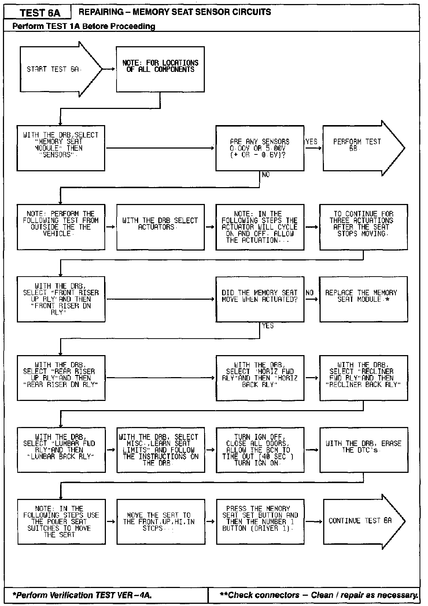
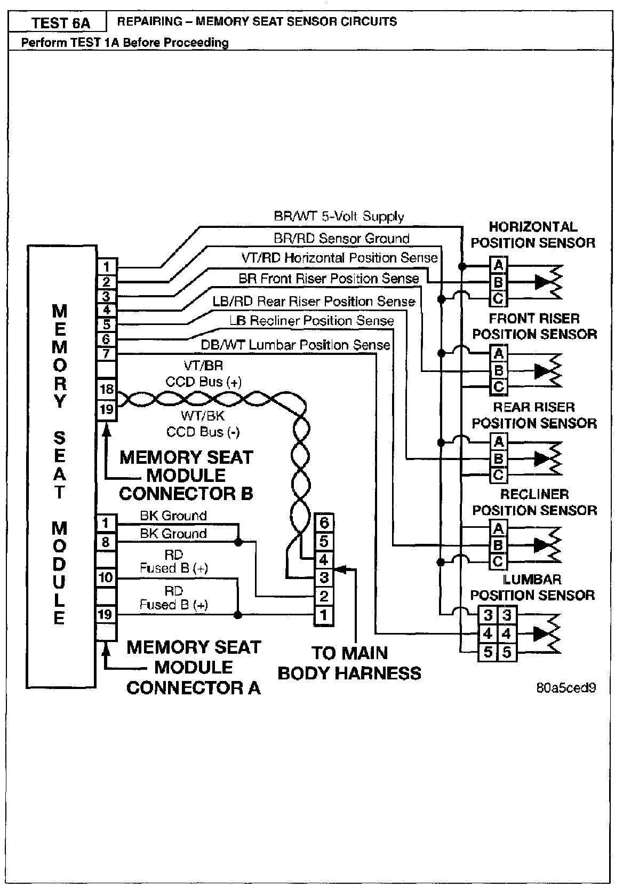
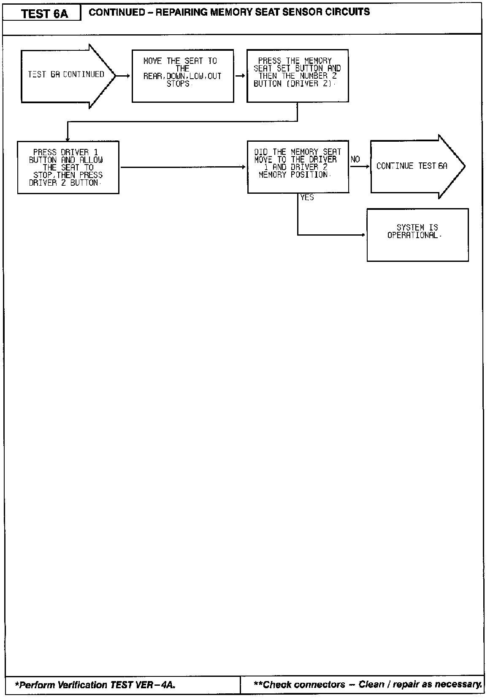
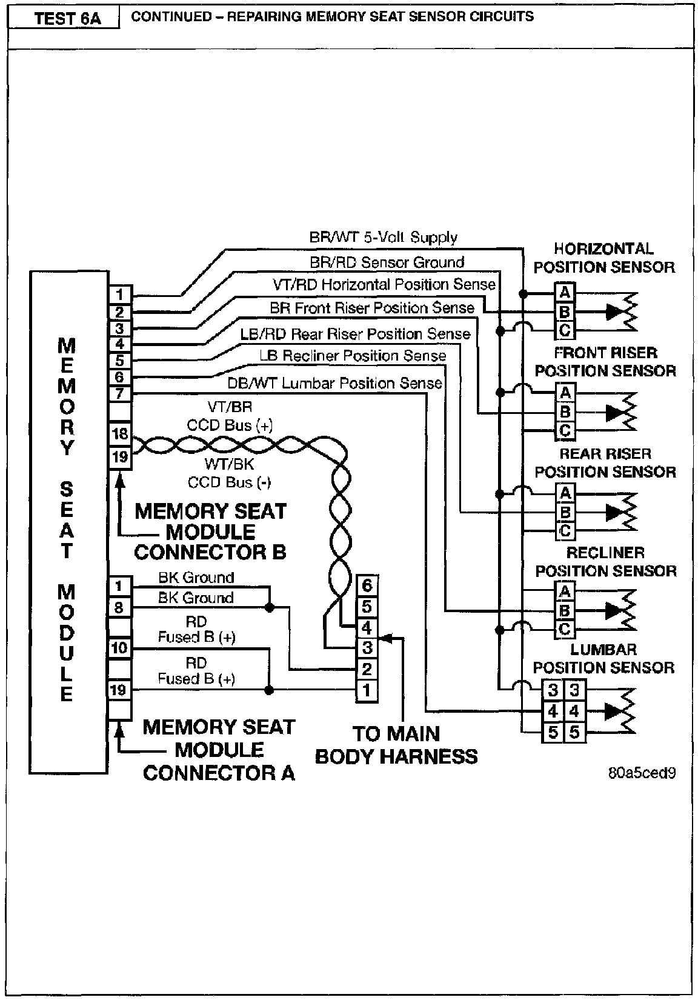
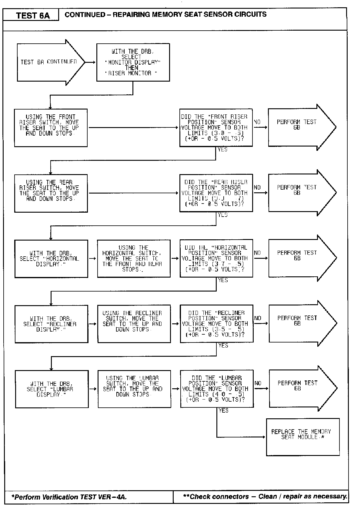
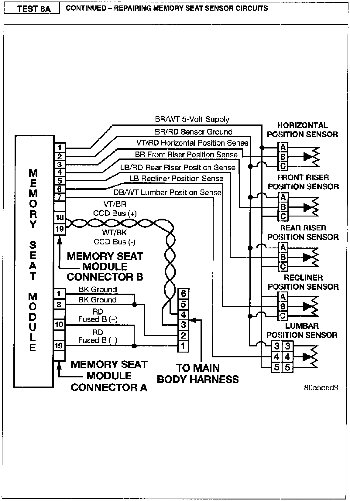

Operation CHARM
: Car repair manuals for everyone.
Русский
Home
>>
Jeep
>>
1997
>>
Grand Cherokee 4WD L6-4.0L VIN S
>>
Repair and Diagnosis
>>
A L L Diagnostic Trouble Codes ( DTC )
>>
Testing and Inspection
>>
Manufacturer Code Charts
>>
Memory System
>>
6A Repairing - Memory Seat Sensor Circuits
6A Repairing - Memory Seat Sensor Circuits


Part 1 of 3


Part 2 of 3


Part 3 of 3